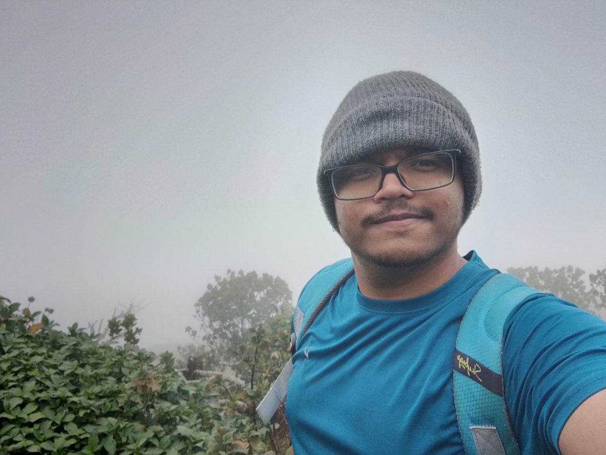

I build event-driven backend systems in Java, Spring Boot, and Kafka — and lately, agentic AI tooling that reviews code on its own. Every metric in the strip above is from something I shipped to production.
I'm Anurag — a backend engineer at DealShare, an Indian ecommerce unicorn, where I converted from intern to full-time SDE. My day job is the unglamorous, load-bearing kind of engineering: payment flows, refund logic, order-sync services for physical retail stores, and the observability to know when any of it misbehaves.
The project I'm proudest of started as a side experiment: an agentic AI PR review assistant built on the Claude API that grew into a multi-step autonomous loop — inspecting code, calling tools, and posting review decisions on its own. It cut our internal tooling costs by about 70%.
Off the clock, I'm deep in the markets — equities, gold, BTC, F&O — not just watching them, but building my own technical-analysis tooling. Same instinct either way: find the signal, trust the system, respect the data.
An AI reviewer that doesn't just comment — it acts. Built on the Claude API and Bitbucket, it evolved from a linear pipeline into a genuine agentic loop: deciding which files to inspect, what to flag, and posting review decisions autonomously. Runs on every PR, cut internal tooling costs by roughly 70%.
A technical-analysis engine built because the tools I wanted didn't exist. Started with the Nifty 500, now watching whatever moves: equities, gold, BTC, F&O. Scores instruments on CPR width, MACD, Bollinger Bands, and EMA confluence, with next-week projected CPR flags for narrow-range setups. Try the demo below.
| Symbol | CPR Width % | MACD | EMA Confluence | Score | Signal |
|---|

South India's toughest trek, 14 km up and 14 km down. January fog included.
What the summit actually looked like that morning.
B.Tech in CSE, PES University — August 2025.
Trekking is my forced context-switch: no Wi-Fi, no dashboards, just a trail and whatever the weather decides. Turns out walking uphill in fog is excellent debugging for the brain — most of my best fixes arrived somewhere between the base and the viewpoint that never showed up.
B.Tech in Computer Science · GPA 8.43
Selected from 60,000+ applicants nationwide
Backend-focused, production-tested, and genuinely excited about the agentic AI wave. If you're building something where reliability and AI meet, I'd love to talk.